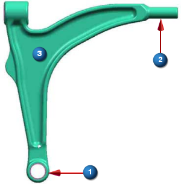

问题
1
2
假设您响应减小该部件的重量，但您需要保留所有位于(1)和(2)处的材料，以连接到其它组件上，那么可以使用哪些方法？

可以选择多个您认为正确的答案
指定区域(3)作为设计区域，排除区域(1)和(2)
指定整个部件作为设计区域，并定义区域(1)和(2)的限制
指定区域(1)和(2)作为设计区域
指定整个部件作为设计区域，并在设计约束中包含区域(1)和(2)
要最大化结构刚度，您应该如何定义设计目标？
请选择一个答案
创建一个基本类型的设计响应，并将设计目标设为最大化
创建一个柔度类型的设计响应，并将设计目标设为最小化
创建一个应力/应变类型的设计响应，并将设计目标设为最小化
创建一个应力/应变类型的设计响应，并将设计目标设为最大化
错误！
正确！
可以定义约束以防止优化移除模型中的某个区域，或者您可以包含设计区域中想要优化的区域
应力/应变类型的设计响应，并且设计目标设为最小化，将会使结构柔度最小化。柔度是刚度的倒数，表示整个模型的总应变能。